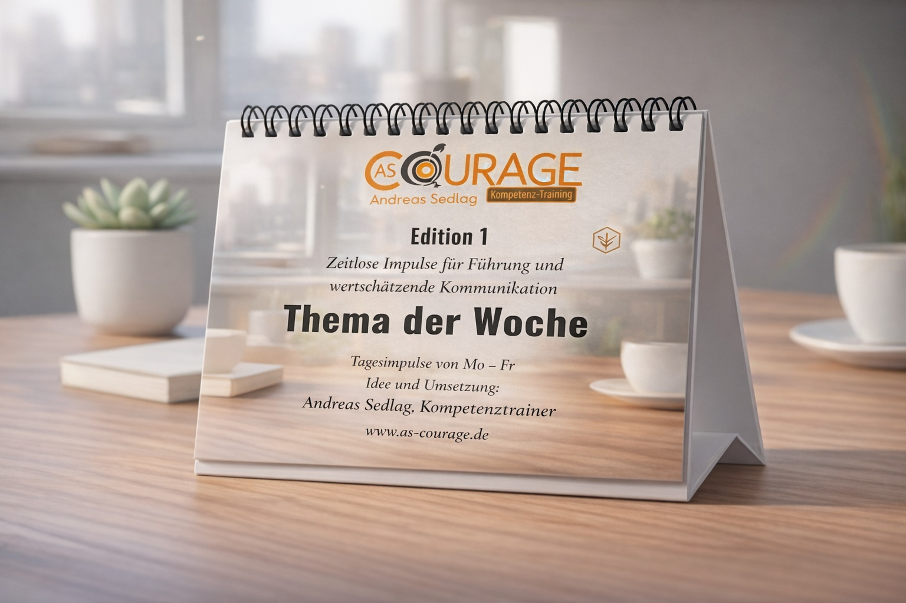
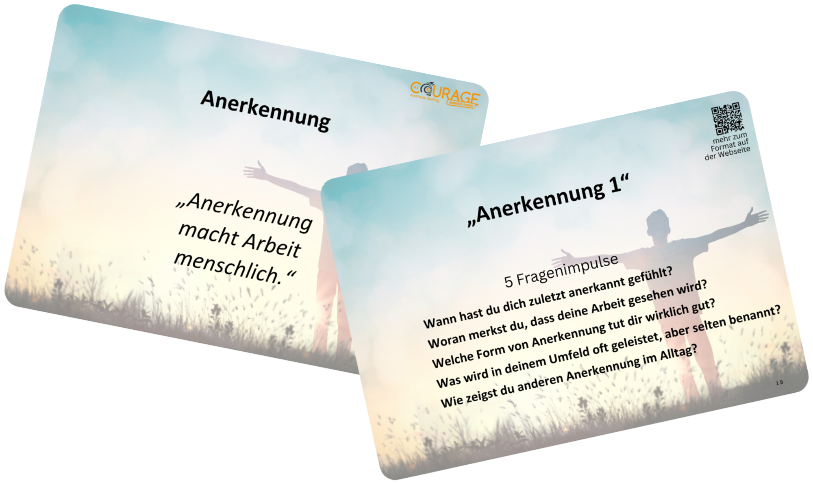
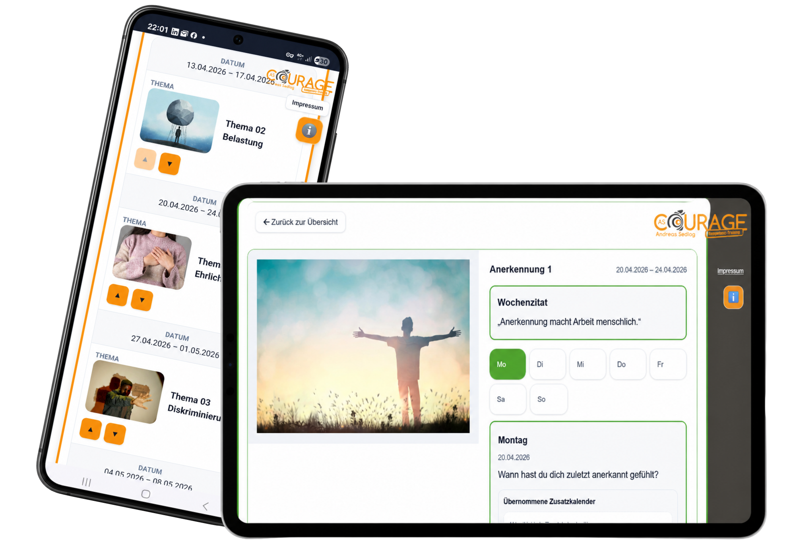

Tischaufsteller
Wochenfokus am Arbeitsplatz – sichtbar, leise und wirksam.
Wissen & Medien
Podcast, Videothek und Downloads ergänzen Trainings, Workshops, Coaching und Vorträge. Sie machen Inhalte zugänglich, vertiefen Themen und unterstützen den Transfer in den Alltag.
Projekt
„Thema der Woche“ ist ein Impulsformat für Teams, Führungskräfte und Organisationen. Es verbindet Wochenzitate, Tagesimpulse und Reflexionsfragen mit einem klaren Ziel: Gespräche über Zusammenarbeit, Haltung, Wertschätzung und psychologische Sicherheit einfacher in den Alltag zu bringen.
Das Format ist als Tischaufsteller, Kartenset und browserbasierte App nutzbar. So entstehen kleine Gesprächsanlässe, die ohne lange Vorbereitung in Teamrunden, Seminaren, Coaching, Führungskräfteentwicklung und Ehrenamt eingesetzt werden können.

Wochenfokus am Arbeitsplatz – sichtbar, leise und wirksam.


Greifbare Impulse flexibel für den Tisch – und digital für PC, Mac, Tablet und Smartphone. So kann „Thema der Woche“ analog und digital genutzt werden.
Medienbereiche
Die Medienbereiche sind als Ergänzung gedacht: zur Vorbereitung, zur Nachbereitung oder als kurzer Impuls für Menschen, Teams und Organisationen.
„Wissen für morgen – verständlich und kompakt“ bietet praxisnahe Impulse zu Führung, Kommunikation, Zusammenarbeit und gesellschaftlichen Themen. Finden Sie passende Folgen über die Stichwortsuche und hören Sie direkt auf dieser Website – kostenlos und ohne Anmeldung. Sie können den Podcast auch über gängige Podcast-Apps kostenlos abonnieren. Mit KI-Unterstützung erstellt.
Aktuelle Folgenzahl wird geladen …
Podcast-Mediathek öffnenDie Videothek bündelt Erklärfilme und praktische Impulse. Suchen Sie bequem nach Themen und Stichworten und sehen Sie Videos direkt auf dieser Website. Den YouTube-Kanal können Sie kostenlos abonnieren. Einige Videos wurden mit KI-Unterstützung erstellt.
Aktuelle Videozahl wird geladen …
Videothek öffnenKostenlose Handouts, Checklisten und Arbeitshilfen stehen allen Interessierten offen. Ergänzende Seminarunterlagen erhalten Teilnehmende im geschützten Bereich.
Nutzen
Medien und Materialien ersetzen keine gemeinsame Arbeit. Aber sie können Themen wachhalten, Gespräche vorbereiten und Transfer im Alltag unterstützen.
Inhalte können nach einem Training erneut aufgegriffen und in Ruhe nachvollzogen werden.
Kurze Audio- und Videoimpulse erleichtern den Einstieg in komplexe Themen.
Downloads, Handouts und Arbeitshilfen unterstützen die Anwendung in Teams, Gruppen und Organisationen.
Freier Zugang und geschützte Bereiche
Viele Inhalte sind frei zugänglich. Ergänzend können später einzelne Bereiche mit einem einfachen Zugangshinweis oder einem geschützten Zugang ergänzt werden. Vertrauliche oder intime Dateien gehören nicht in diesen öffentlichen Medienbereich.
Nächster Schritt
Sie möchten Inhalte vorbereiten, vertiefen oder als Begleitung für ein Training nutzen? Im Gespräch klären wir, welche Materialien und Formate sinnvoll sind.